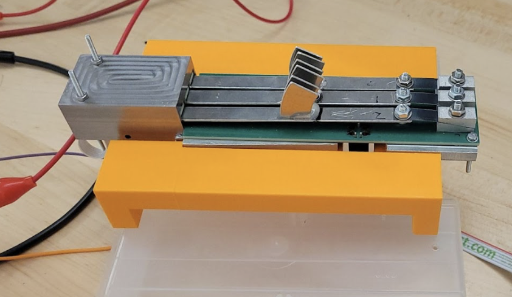
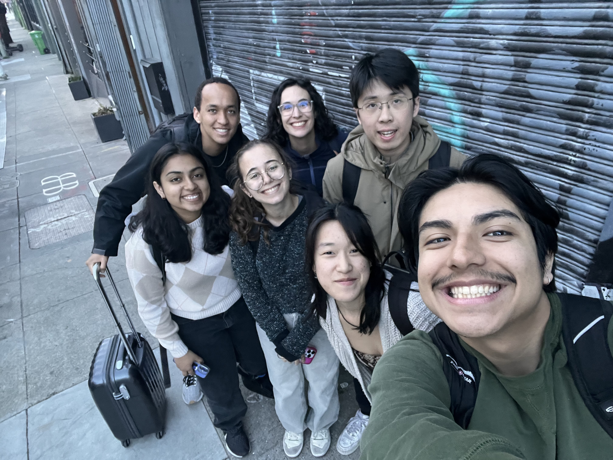
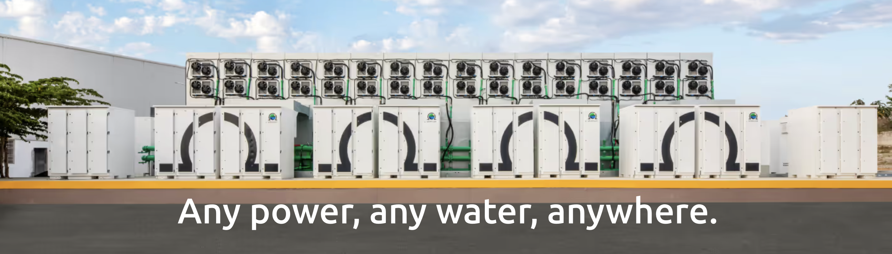

Trilobio

During my junior year, I worked with Trilobio, a biotech startup developing modular robotic systems for laboratory automation, as part of Harvey Mudd’s Clinic program. Trilobio’s robots (Trilobots) automate tasks like multichannel pipetting, but currently rely on manual validation of dispensed volumes. Our team was tasked with designing a precision analytical balance capable of validating up to eight pipetted samples simultaneously, integrating directly into Trilobio’s modular robotic platform. Automating this process has the potential to save researchers significant time, improve reproducibility, and lower barriers to accessible lab automation.
Mechanically, our design relied on a flexure-based system, where the deflection of a beam under load is converted into a measurable signal. A novel damping system and custom housing stabilized the measurements against vibration and environmental noise, providing bothstructural support and electromagnetic shielding. Custom weigh boats were also designed to integrate with our balance.
My primary focus was on the electrical system, which enabled precise mass measurement through capacitive sensing. I designed custom PCBs (one of which is shown on the left) that integrated capacitive plates, high-resolution capacitance-to-digital converters, and signal conditioning circuitry. I also helped implemented digital communication through I²C multiplexing and integrated an STM32 microcontroller with CAN bus capabilities to ensure seamless communication with the Trilobot system. To minimize noise, I separated analog and digital domains on the PCB, carefully routed signals, and incorporated shielding into the design.
In addition to PCB design, I contributed to testing and debugging the electronic system. This included calibrating the capacitive sensors, validating resolution down to sub-milligram precision, and characterizing sources of noise under different housing and damping configurations. Our final three-channel prototype demonstrated the ability to measure dispensed liquid volumes with the required precision in low-noise environments and provided a clear roadmap for scaling to a full eight-channel system.
This project gave me hands-on experience in precision electronics, PCB design, and noise mitigation, while also exposing me to the interdisciplinary challenges of integrating mechanical flexures, damping, and custom housings with high-resolution electrical sensing. More broadly, it strengthened my ability to bridge theory with practice, working within real-world constraints to deliver a system that could be directly integrated into a commercial robotic platform. Below are two photos from our site visit, one of which is me troubleshooting/resoldering our PCB, and the other of which features my fantastic team!


Ohmium
During my senior year, as a part of Harvey Mudd’s Clinic Program, our project is sponsored by Ohmium. Ohmium develops Proton Exchange Membrane (PEM) Electrolyzers, which are electrochemical devices that use a special polymer membrane to split water into hydrogen and ozygen using electrocity. This green hydrogen solution reduces the carbon needed in many industrial and energy processes, thus promoting a more sustainable way of life.
PEM electrolyzers use catalysts to enhance the reaction rates and efficiency. Due to lack of predictive capabilities, catalyst performance must be evaluated in the actual device, and since tests can range up to a multitude of hours, this presents a limitation to rapid development. Our clinic team is tasked with solving this problem, and our goal is to design a testing system that is capable of testing multiple materials/catalyst mixes in a single experiment. This project requires a deep understanding of PEM cells and functionalities, as well as an interdisciplinary team of mechanical, electrical, and computer/controls engineers. We are currently in the process of designing and building this system, and I am focusing primarily on the electrical subsystem of this project. Stay tuned to hear about our final solution!
